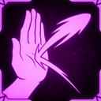
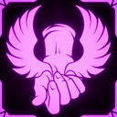
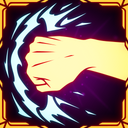

Fistmage
像你这样满脑子肌肉的人本来没有理由成为巫师，但你还是坚持了下来，并且不知怎么就把它做成了。
强力的坦克/伤害混合职业，特别重视反击。
技能
主技能：Aura Fist
蓄力并释放拳击，造成 55-100 点物理伤害。
副技能：Deflecting Swipe
挥击，造成 40 点物理伤害。
挥击后获得一个短暂窗口，下一次你受到的伤害会被完全偏转。成功偏转攻击会给予你 EMPOWERED，持续 X 秒，治疗你 25 点生命，并立即重置冷却。
冷却 X 秒。
辅助技能：Super Endurance
进入坚忍姿态 5 秒。在此期间，你失去 X% 移动速度，并获得 X% 防御提升。
冷却 12 秒。
职业升级
| 图片 | 稀有度 | 技能 | 说明 | 叠加类型 |
|---|---|---|---|---|
| 普通 | Fistmage: Proficiency | 成功使用 Deflecting Swipe 时，治疗 2 HP，每层 +2 HP，并在自身周围召唤一个光环，为附近队友治疗，治疗量为你个人治疗量的一半。 | 线性 | |
| 稀有 | Fistmage: Mach Punch | 当你的移动速度属性超过 100% 时，为你提供额外物理伤害。 | 指数 | |
 |
稀有 | Fistmage: Mastery | 成功偏转时，获得的 EMPOWERED 和 ENFORCED 状态效果持续时间略微延长。 | 线性 |
| 稀有 | Fistmage: Rage | 成功使用 Deflecting Swipe 时，攻击速度提高 100%，每层 +X%，持续 4 秒，并给予你 HASTE 状态效果，持续 X 秒，每层 +X 秒。 | 双曲 | |
 |
稀有 | Fistmage: Runner | 蓄力 Aura Fist 时，逐渐提高你的移动速度。 | 指数 |
 |
传奇 | Fistmage: Apply Force | 成功使用 Deflecting Swipe 后，获得短暂的 APPLY-FORCE 状态效果。在该状态生效时释放完全蓄力的 Aura Fist，会发射一个远程投射物，造成物理伤害，并消耗 1 层该状态效果。Deflecting Swipe 冷却 +30%。 | 线性 |